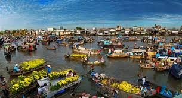

Chợ nổi Cái Răng - một trong những chợ nổi lớn nhất và đặc sắc nhất miền Tây Nam Bộ, nơi lưu giữ nét văn hóa sông nước độc đáo của vùng đồng bằng sông Cửu Long. Hành trình khám phá chợ nổi sẽ mang đến cho bạn những trải nghiệm chân thực nhất về cuộc sống của người dân miền sông nước.
1. Thông tin chung về chợ nổi Cái Răng
Địa điểm: Cách trung tâm TP. Cần Thơ khoảng 6km về phía hạ lưu sông Hậu
Thời gian hoạt động: Từ 4h sáng đến khoảng 10h trưa
Đặc điểm nổi bật:
- Di sản văn hóa phi vật thể quốc gia
- Hơn 400 ghe, thuyền buôn bán tấp nập
- Không gian buôn bán hoàn toàn trên sông nước
- Bèo (cây chèo) là phương tiện di chuyển chính
2. Lịch trình tour điển hình
4h30 - 5h00:
• Xuất phát từ bến Ninh Kiều (Cần Thơ)
• Di chuyển bằng thuyền máy ra chợ nổi
• Ngắm bình minh trên sông Hậu
5h30 - 7h30:
• Tham quan chợ nổi, tìm hiểu cách buôn bán
• Mua trái cây tươi ngon từ các ghe hàng
• Thưởng thức hủ tiếu, bún riêu trên ghe
8h00 - 9h30:
• Ghé thăm làng nghề làm bánh tráng
• Tham quan vườn trái cây ven sông
• Trải nghiệm chèo xuồng ba lá
10h00:
• Trở về bến Ninh Kiều
• Kết thúc hành trình
3. Những trải nghiệm không thể bỏ qua
Ăn sáng trên ghe
• Hủ tiếu ghe: 20.000-30.000đ/tô
• Bún riêu ghe: 25.000-35.000đ/tô
• Cà phê ghe: 15.000đ/ly
Mua đặc sản
• Trái cây miền Tây: Sầu riêng, chôm chôm, măng cụt
• Bánh tráng, bánh phồng tôm
• Mật ong rừng U Minh
Hoạt động thú vị
• Chụp ảnh với "bèo" - người bán hàng trên sông
• Học cách "mua bán bằng cây bẹo"
• Thử chèo xuồng ba lá
4. Mẹo khi đi chợ nổi
- Thời điểm lý tưởng: Nên đi từ 5h-8h sáng khi chợ đông nhất
- Trang phục: Mặc đồ thoải mái, đội nón rộng vành, mang dép xỏ ngón
- Giá cả: Mặc cả khoảng 20-30% so với giá chào ban đầu
- An toàn: Mang theo túi chống nước cho đồ dùng cá nhân
- Di chuyển: Thuê thuyền riêng (khoảng 300.000đ/thuyền) hoặc đi tour ghép (100.000-150.000đ/người)
5. Các tour kết hợp với chợ nổi
Tour nửa ngày:
• Chợ nổi Cái Răng + Vườn trái cây
• Giá từ 150.000-200.000đ/người
Tour 1 ngày:
• Chợ nổi + Làng nghề + Nhà cổ Bình Thủy
• Giá từ 300.000-400.000đ/người
Tour đêm:
• Chợ đêm Ninh Kiều + Đi thuyền ngắm cảnh
• Giá từ 200.000đ/người
Chợ nổi Cái Răng không chỉ là nơi buôn bán mà còn là bảo tàng sống về văn hóa sông nước miền Tây. Hành trình khám phá chợ nổi sẽ mang đến cho bạn cái nhìn chân thực về cuộc sống bình dị nhưng đầy sắc màu của người dân Nam Bộ, cùng những trải nghiệm ẩm thực độc đáo không thể tìm thấy ở bất cứ nơi nào khác.